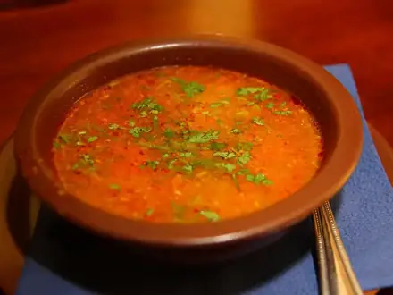

Что приготовить из мяса
Говядина, свинина и баранина: тушёное, жареное и в духовке. 24 рецептов: у каждого время, калории и БЖУ на порцию, пошаговые инструкции и список покупок
 Говядина с брокколи35 мин · 466 ккал · Б 34 г · Второе блюдо
Говядина с брокколи35 мин · 466 ккал · Б 34 г · Второе блюдо Бефстроганов60 мин · 487 ккал · Б 31 г · Второе блюдо
Бефстроганов60 мин · 487 ккал · Б 31 г · Второе блюдо Самса из слоёного теста60 мин · 478 ккал · Б 17 г · Выпечка
Самса из слоёного теста60 мин · 478 ккал · Б 17 г · Выпечка Мясо по-французски60 мин · 615 ккал · Б 31 г · Второе блюдо
Мясо по-французски60 мин · 615 ккал · Б 31 г · Второе блюдо Лагман75 мин · 798 ккал · Б 37 г · Второе блюдо
Лагман75 мин · 798 ккал · Б 37 г · Второе блюдо Жаркое со свининой в горшочках100 мин · 533 ккал · Б 24 г · Второе блюдо
Жаркое со свининой в горшочках100 мин · 533 ккал · Б 24 г · Второе блюдо Эчпочмак100 мин · 721 ккал · Б 27 г · Выпечка
Эчпочмак100 мин · 721 ккал · Б 27 г · Выпечка Азу по-татарски100 мин · 574 ккал · Б 33 г · Второе блюдо
Азу по-татарски100 мин · 574 ккал · Б 33 г · Второе блюдо Гуляш из говядины110 мин · 386 ккал · Б 28 г · Второе блюдо
Гуляш из говядины110 мин · 386 ккал · Б 28 г · Второе блюдо Долма в капустных листьях110 мин · 417 ккал · Б 24 г · Второе блюдо
Долма в капустных листьях110 мин · 417 ккал · Б 24 г · Второе блюдо Рассольник120 мин · 304 ккал · Б 19 г · Суп
Рассольник120 мин · 304 ккал · Б 19 г · Суп Солянка мясная120 мин · 401 ккал · Б 22 г · Суп
Солянка мясная120 мин · 401 ккал · Б 22 г · Суп
Суп харчо120 мин · 345 ккал · Б 23 г · Суп Чанахи в горшочках120 мин · 499 ккал · Б 30 г · Второе блюдо
Чанахи в горшочках120 мин · 499 ккал · Б 30 г · Второе блюдо Манты с бараниной120 мин · 651 ккал · Б 29 г · Второе блюдо
Манты с бараниной120 мин · 651 ккал · Б 29 г · Второе блюдо Чечевичная похлёбка с бараниной120 мин · 336 ккал · Б 23 г · Суп
Чечевичная похлёбка с бараниной120 мин · 336 ккал · Б 23 г · Суп Плов с говядиной130 мин · 880 ккал · Б 33 г · Второе блюдо
Плов с говядиной130 мин · 880 ккал · Б 33 г · Второе блюдо Кюфта-бозбаш130 мин · 366 ккал · Б 21 г · Суп
Кюфта-бозбаш130 мин · 366 ккал · Б 21 г · Суп Говядина тушёная с фасолью130 мин · 392 ккал · Б 31 г · Второе блюдо
Говядина тушёная с фасолью130 мин · 392 ккал · Б 31 г · Второе блюдо Борщ150 мин · 349 ккал · Б 23 г · Суп
Борщ150 мин · 349 ккал · Б 23 г · Суп Шурпа из баранины150 мин · 462 ккал · Б 30 г · Суп
Шурпа из баранины150 мин · 462 ккал · Б 30 г · Суп Плов узбекский с бараниной150 мин · 996 ккал · Б 31 г · Второе блюдо
Плов узбекский с бараниной150 мин · 996 ккал · Б 31 г · Второе блюдо Бешбармак210 мин · 796 ккал · Б 49 г · Второе блюдо
Бешбармак210 мин · 796 ккал · Б 49 г · Второе блюдо- Мачанка с блинами90 мин · 977 ккал · Б 38 г · Второе блюдо
Другие подборки
- Что приготовить из курицы
- Что приготовить из фарша
- Что приготовить из рыбы
- Что приготовить из картошки
- Что приготовить из яиц
- Что приготовить из творога
- Что приготовить из кабачков
- Что приготовить из капусты
- Что приготовить из грибов
- Что приготовить из риса
- Что приготовить из макарон
- Что приготовить из гречки
- Быстрый ужин за 30 минут
- Быстрый завтрак за 20 минут
- Что приготовить на скорую руку
- ПП-рецепты: лёгкие блюда до 400 ккал
- Белковые блюда: от 25 г белка на порцию
- Дешёвые рецепты из простых продуктов
- Что приготовить ребёнку
- Постные блюда
- Блюда на пару
- Что приготовить в духовке
- Простые супы
- Простые салаты
- Выпечка и десерты
- Блюда на праздничный стол
- Что приготовить из остатков